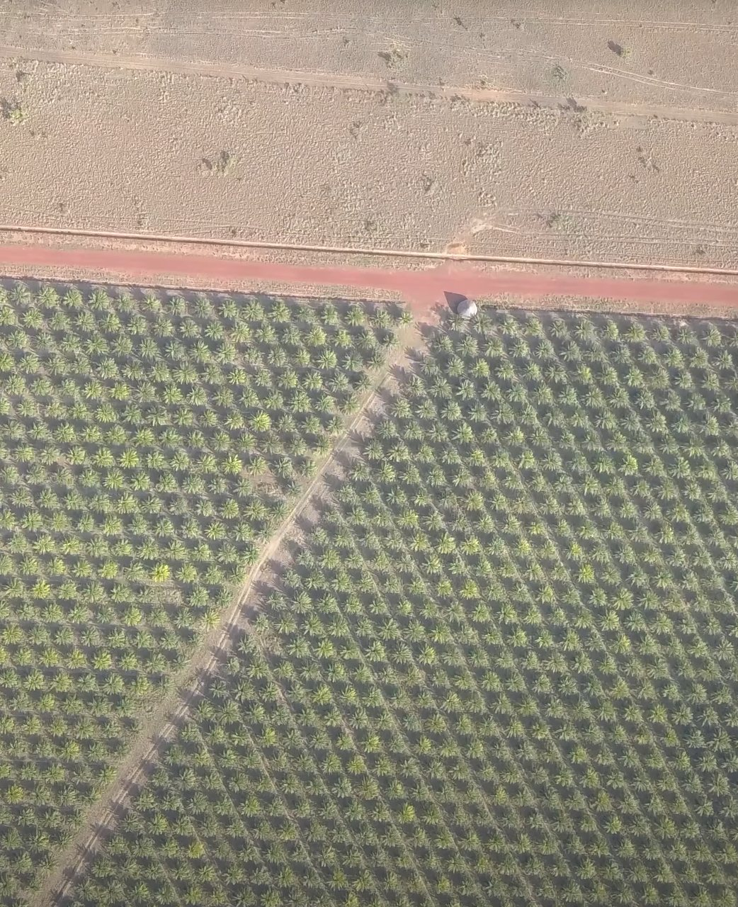
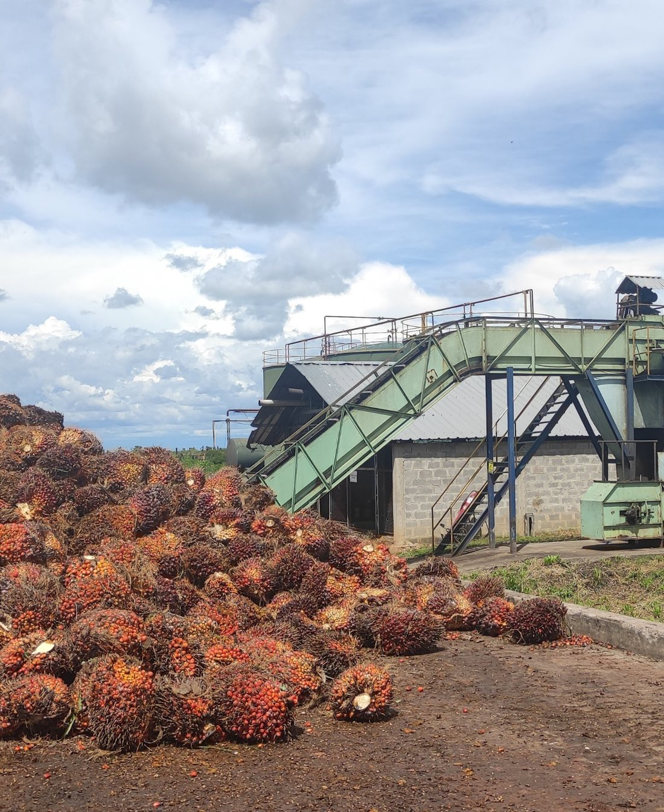
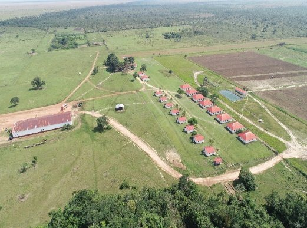

Más allá del cumplimiento ambientalBeyond environmental compliance
Así hacemos realidad nuestro pilar de Uso Responsable de la Tierra: todos los días y en cada hectárea.This is how we put our Responsible Land Use pillar into practice, every day, on every hectare.

Solo sabana degradadaDegraded savanna only
El 100% de nuestra siembra está sobre sabana degradada. Desde el primer día no hemos tumbado un solo árbol de bosque ni usado turba.100% of our planting is on degraded savanna. From day one we have never cleared forest or used peat.

Prácticas circularesCircular practices
Tratamos los residuos orgánicos y los devolvemos al suelo como abono. Los racimos vacíos los compostamos en la misma finca.We treat organic waste and return it to the soil as fertilizer. Empty fruit bunches are composted on-site.

Manejo del aguaWater stewardship
Manejamos el agua en circuito cerrado, con reservorios propios: tratamos los vertimientos antes de devolverlos y nos abastecemos en la misma finca.We manage water in a closed loop, with our own reservoirs; we treat effluents before discharge and source water on-site.
Una huella de carbono negativaA carbon-negative footprint
El aceite de palma que producimos tiene una huella de carbono negativa, certificada por un análisis de ciclo de vida independiente, y sirve para fabricar biodiésel y otros productos. Al sembrar sobre sabana degradada, sin deforestar y con prácticas circulares, cada hectárea termina aportando de forma positiva al balance de carbono.The palm oil we produce has a carbon-negative footprint, validated by an independent life-cycle assessment, and is used to make biodiesel and other products. Growing on degraded savanna, without deforestation and with circular practices, means every hectare contributes positively to the carbon balance.

Nuestra hoja de ruta de certificaciónOur certification roadmap
Ya tenemos la certificación de sostenibilidad de APS Colombia y vamos en camino a los estándares internacionales RSPO e ISCC. El ritmo depende de los tiempos de cada entidad certificadora, pero esperamos lograrlo hacia 2027.We already hold the APS Colombia sustainability certification and we are in the process of achieving the international RSPO and ISCC standards. The pace depends on each certification body's timelines; we expect to get there by 2027.
- CertificadoCertifiedAPS Colombia
Certificación de sostenibilidad otorgada con base en los 10 principios del programa de Aceite de Palma Sostenible (APS).Sustainability certification granted under the 10 principles of the Sustainable Palm Oil (APS) program.
OtorgadaGranted - RSPO e ISCCEstándares internacionales que garantizan prácticas ambientales, sociales y de trazabilidad de primer nivel.International standards that guarantee top-tier environmental, social and traceability practices.En proceso, previstas para 2027In process, targeted for 2027


Documentado en el dominio públicoDocumented in the public domain
Nuestro desempeño ambiental y social está sustentado en evaluaciones independientes de acceso público.Our environmental and social performance is documented in independent, publicly available assessments.
&Green - Evaluación de Impacto Social y Ambiental (ESIA)Social & Environmental Impact Assessment (ESIA)
Estudio independiente del impacto social y ambiental de Prestige, divulgado por el fondo &Green.Independent social and environmental impact assessment of Prestige, disclosed by the &Green fund.
&Green - ESIA a nivel de paisajeLandscape-level ESIA
Evaluación a escala de paisaje del proyecto en Vichada.Landscape-scale assessment of the Vichada project.